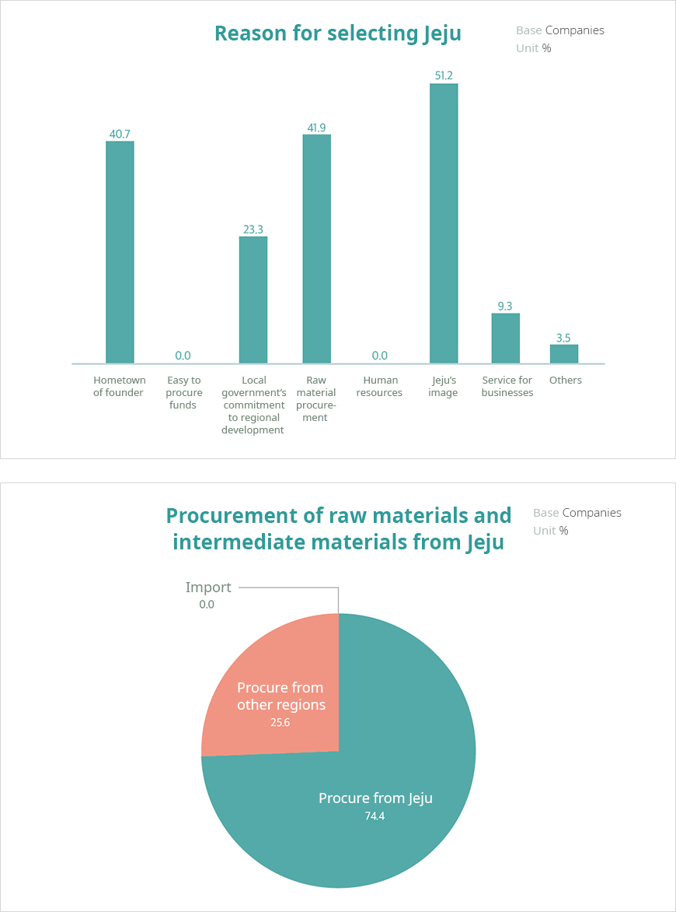

기획취재콘텐츠
- Home
- 제주라이프
- 기획취재콘텐츠
Cosmetics Ingredients from Jeju Part 2새로운 글

Growth of Jeju Cosmetics Industry
According to one survey on the cosmetics industry in Jeju, it is estimated that approximately 100 cosmetics companies are located inside of Jeju province, and 80% of them have headquarters on Jeju. Sales and exports from Jeju cosmetics companies have shown continuous growth. Exports, in particular, have shown a clear pace of growth. As the scale of the cosmetics industry has expanded, so has the number of people working in related industries. The total number of people working in cosmetics companies in Jeju increased from 602 in 2017, to 653 in 2018, and to 855 in 2019 (up 30% YoY in 2019).
Sales of companies and sales in Jeju (base:Companies, Unit: KRW million)
| Category | Sales in Jeju | Total sales of all companies |
|---|---|---|
| 2019 | 122,903(+4,942) | 598,245(+8,580) |
| 2018 | 114,381(+8,284) | 589,665(+14,897) |
| 2017 | 106,097(+6,875) | 574,768(-66,264) |
| 2016 | 99,222 | 641,032 |
Exports of companies and exports from Jeju (base:Companies, Unit: USD thousand)
| Category | Exports from Jeju | Exports of companies |
|---|---|---|
| 2019 | 13,961(+1,196) | 67,144(+4,942) |
| 2018 | 12,765(+1,294) | 63,202(+17,685) |
| 2017 | 11,471(+1,122) | 44,517(+10,056) |
| 2016 | 10,349 | 34,461 |
Number of employees at cosmetics companies in Jeju(base:Companies, Unit:number of employees)
2017 - 602, 2018 - 653(+51), 2019 - 855(+202), Estimated additional recruitment in 2019(+65)

Jeju Technopark has estimated that the growth of the cosmetics industry would be accompanied by the growth of the cosmetics ingredient industry. In a survey asking about the origins of raw materials and intermediate materials used in cosmetic products, 74.4% of respondents answered that they procured ingredients from Jeju. This means that these companies do not just use the image of clean Jeju, but actively consume ingredients originating from Jeju. When companies with headquarters located in Jeju or that have opened branches in Jeju were asked why they chose Jeju as a business site (multiple responses possible), 51.2% answered that they want to create synergistic effects with Jeju’s image and 41.9% answered that it would be easy to procure raw materials.

Reason for selecting Jeju (base:Companies, Unit:%)
- Hometown of founder 40.7%
- Easy to procure funds 0%
- Local government’s commitment to regional development 23.3%
- Raw material procurement 41.9%
- Human resources 0%
- Jeju’s image 51.2%
- Service for businesses 9.3%
- Others 3.5%
Procurement of raw materials and intermediate materials from Jeju (base:Companies, Unit %)
Procure from Jeju 74.4%, Procure from other regions 25.6%, Import 0%

Likewise, the firmly established images of Jeju as a pure environment and clean ingredients with high functions lead to immeasurable possibilities for cosmetics and cosmetics ingredient companies located in Jeju. The cosmetics industry is a higher added-value industry in which images and brand values can maximize business values, and the cosmetics ingredient industry is a technology-intensive industry. If companies take the lead in the R&D of various species, they will be able to create even greater added-value as leaders in food and cosmetics ingredient technologies.
Efforts to vitalize the cosmetics and cosmetics ingredient industries in Jeju
Jeju Special Self-Governing Province has fostered the health and beauty bio industries (perfumed goods, foods, marine bio, etc.) as its strategic industries. Jeju Technopark, which works as a driving force of Jeju’s bio industry, is focusing on developing health and beauty bio industries and creating a bioscience park. In 2004, the local government opened cosmetics factories and earned CGMP (cosmetics GMP in December 2005) for the first time in Korea, and it has supported the production of over 3 million perfumed goods, such as skin care products, functional products, face packs, and shampoo.
JTP completed its cosmetics factories in June 2007 and they are currently in operation. In November 2019, the Consultative Group on Industrialization of Cosmetics Ingredients was established to secure natural resources, build infrastructure, and foster the cosmetics ingredient industry. The Consultative Group consists of cosmetics and ingredient experts from companies, universities, research institutes, and public organizations. They share information about Jeju ingredients, provide consulting service for commercialization, support the certification process of cosmetics ingredients in Jeju, foster human resources, share technologies and information, and support the production of cosmetics ingredients—all necessary support measures for the development and commercialization of cosmetics ingredients.
In addition, the Jeju Cosmetics Cert (JCC) is available to expand the use of cosmetics ingredients in Jeju and improve the image of cosmetics brands from Jeju. Jeju’s governor certifies a product with JCC when the product includes at least 5 to 10% of ingredients from Jeju and the product is produced on Jeju Island. Over 150 products from 32 companies, including large companies like Innisfree and LG Household & Health Care, as well as small- and medium-sized brands that have headquarters located in Jeju, have been certified.
Cosmetics ingredient industry emerging as a driver of future growth in Jeju
The cosmetics ingredient industry has taken a leap as a driver of future growth in Jeju. With R&D and demonstration projects related to cosmetics ingredients, Jeju is seeking to emerge as an advanced business site not only for the cosmetics ingredient industry, but also for the bio industry. This growth also links closely with the tourism industry. Innisfree has converged its cosmetic brand and local content and contributed to vitalizing the local tourism industry. The popularity of K-beauty and the success of cosmetics lines which feature Jeju ingredients and image in their brand stories have drawn attention from foreign travellers, resulting in the region’s emergence as a K-beauty themed travel destination. This popularity has shed new light on Jeju’s beautiful towns and islands, such as Camelia Town, Bija Town, Camelia Hill, and Gapa-do, and Seogwang Tea Garden and Jeju Osulloc Tea Museum have become must-see destinations for travellers to Jeju.
“Thanks to interest in the excellent cosmetics ingredients of Jeju and the popularity of Korean cosmetics brands in overseas market, more and more foreign OEM companies from China and all over the world are visiting Jeju to learn more about ingredients. If we improve our bio technology and utilize a variety of natural species to grow the cosmetics ingredient industry as a technology intensive industry, the possibilities will be significant.” (Bong-seok Kim, Team leader of the cosmetics industry at Jeju Technopark)
There are still many undiscovered potential ingredients hidden across Jeju Island. Research will continue on various species living in the sea and on the land as well as on Jeju’s original species that have grown based on the island’s geographical characteristics. For this reason, the cosmetics ingredient industry has been garnering significant attention as a new driving force of the future of Jeju.